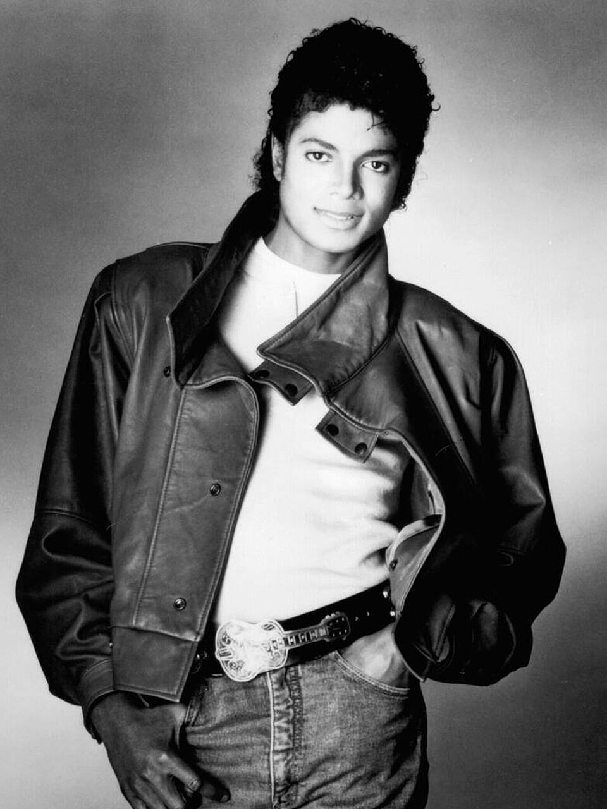

|  | About Michael Jackson Michael Joseph Jackson (August 29, 1958 – June 25, 2009) was an American singer,
songwriter, dancer, and philanthropist. Dubbed the "King of Pop",
he is widely regarded as one of the most culturally significant figures of the 20th century.
Over a four-decade career, his music achievements broke racial barriers in
America and made him a dominant figure worldwide. Through his songs, stages, and fashion,
he proliferated visual performance for artists in popular music, popularizing street dance
moves such as the moonwalk, the robot and the anti-gravity lean. Jackson is often
deemed the greatest entertainer of all time based on his acclaim and records...
Learn more
|